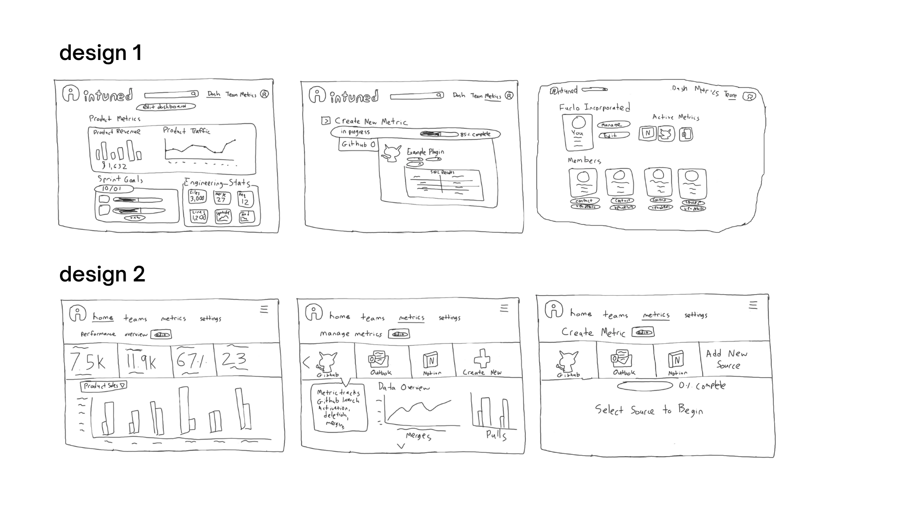
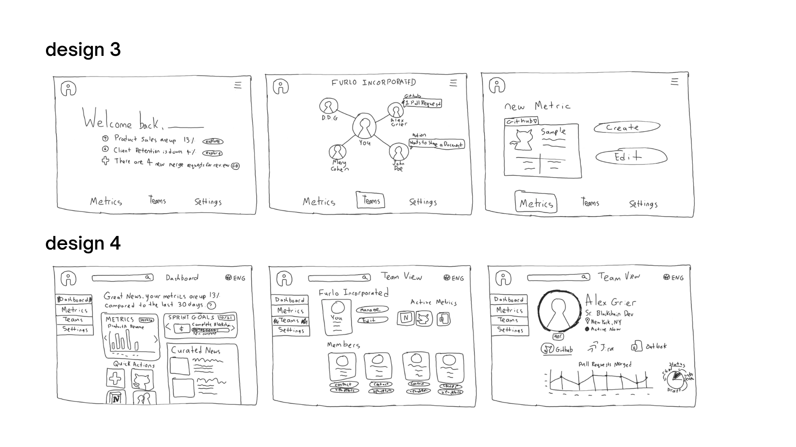
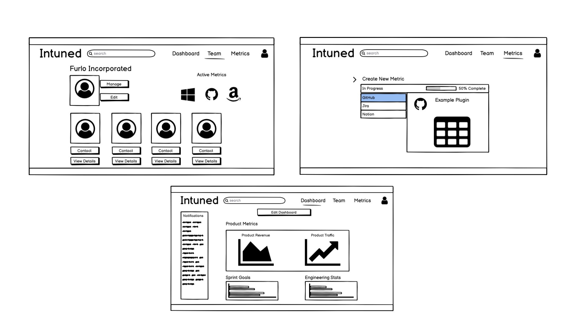

Sketching and Wireframing
Here are the initial sketches we created while brainstorming ideas for our prototype. We explored a wide variety of designs, such as where the navigation bar should be placed, how we should display team members, and how dashboards and metric creation should look like.



After discussing the different sketches, we decided to implement design number 1. We wanted to include notifications on the dashboard page, and we also liked the navigation bar display at the top with a search bar. We also thought that the metrics page was less cluttered and more intuitive in this sketch, as it included a progress bar to tell users how far they were in the process.
User Testing
To investigate the usability of our hifi prototype we used UserTesting.com to see how three users interacted with our interface. Our primary task was to navigate into the metrics page and create a github metric. The overarching task was also divided into two subtasks which was first navigating into the metric page and second successfully creating a github metric.
Below are the instructions for user testing verbatim:
- “Without leaving the homepage, what are your initial impressions of the website? Please be specific in your explanation.”
- “Now, from the homepage, please locate and navigate to the metrics page.”
- “Once in the metrics tab, create a new Github metric. Please continue until you receive confirmation that a new metric is added.”
For each question we’ll briefly discuss general feedback, common errors, and overall performance.
“Without leaving the homepage, what are your initial impressions of the website? Please be specific in your explanation.”
- Feedback: Users universally found the color palette intuitive, noting that the vibrance of the colors made it easy to determine the hierarchy of the colors. Users also mentioned that they found that the usage of modular dashboards aligned with their expectation for Intuned’s intended purpose.
“Now, from the homepage, please locate and navigate to the metrics page.”
- Feedback: Users mentioned that it was easy to both locate, navigate, and click into the metrics’ tab.
- Errors: There were no errors among the 3 users for this subtask.
- Performance: All users were able to complete the task with relative ease.
“Once in the metrics tab, create a new Github metric. Please continue until you receive confirmation that a new metric is added.”
- Feedback: Compared to the previous task, users expressed more confusion and difficulty completing the task at hand. Specifically, users mentioned that the labels and buttons were not necessarily clear for creating a new metric.
- Errors: Users were often confused with the premise of the non-interactive nature of a figma mockup. For instance, all three users were caught up attempting to interact with a non-interactive portion of our website. Additionally, users spent an insignificant amount of time first finding which button was meant to create a new metric; however, once located, users were able to iterate through the steps to create a new metric.
- Performance: Despite the confusion, all users were able to complete the task. On average, users rate this task a 3.6 difficult, where 5 represents “Very Easy”
Potential Interface Improvement
Considering the user feedback, the most immediate feedback we would implement would be to (1) enlarge the size of the button to “Create Your Own” and (2) update the text of the button to be “Create Your Own Metric”. This would directly address the visibility issue and confusion of functionality expressed by the users.
for UI/UX 2022